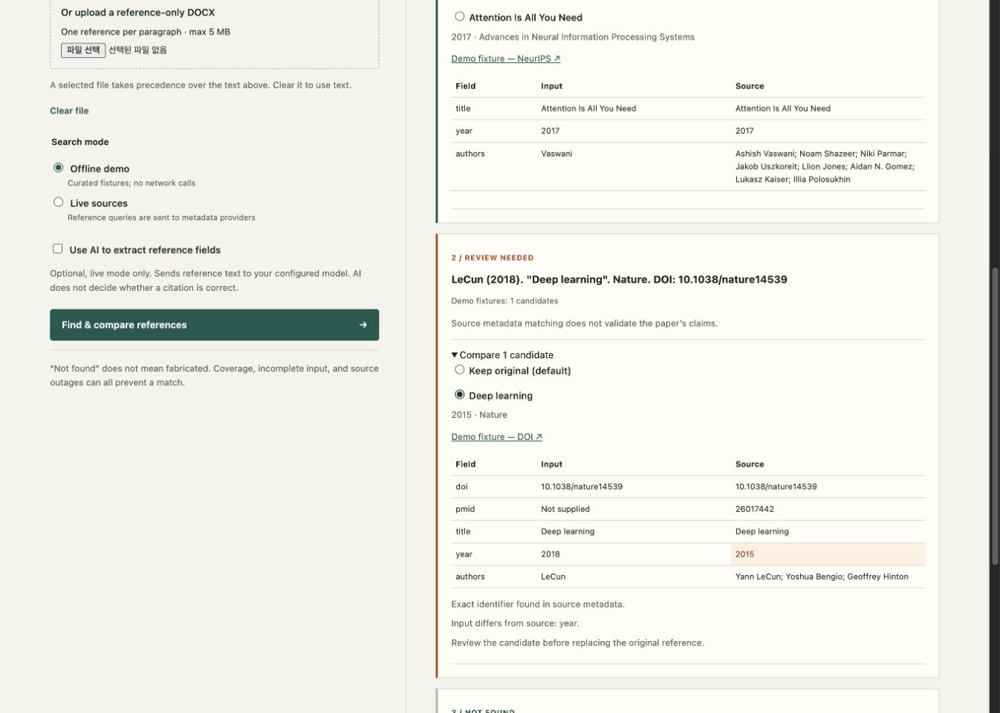

Reference Verifier
A reference-verification and formatting tool developed on contract, with continued feature expansion and delivery.
Project background
I developed this tool for a company on contract and have continued to expand its capabilities and deliver updated versions. It began as a PubMed-focused reference utility and has grown into a desktop workflow for checking reference lists, reviewing source evidence, and preparing consistently formatted documents.
From a reference list to a reviewed document
Users paste a list or import a DOCX file. Whole-list AI parsing separates entries and extracts bibliographic fields, including references that wrap across lines. The app checks that the extracted entries preserve the source text before searching. It supports up to 500 references, with progress tracking and cancellation.
Crossref, OpenAlex, and PubMed provide the first set of candidate records. When these are insufficient, optional web search looks for publisher, society, proceedings, and repository pages. The app reads page metadata separately from the search response and shows the source links and field-level evidence. Preprints and publication versions remain distinct.
Users compare titles, authors, years, and identifiers, then explicitly confirm the intended source. Journal presets and editable formatting settings control author truncation, journal italics, punctuation, and other export details. Confirmed references can be exported to DOCX or plain text in a consistent format.
The desktop implementation combines retrieval adapters, bibliographic comparison, AI parsing, a review interface, and journal-formatting controls. The macOS app runs locally, stores API keys in Keychain, and exposes model settings and configurable web-search limits. Duplicate lookups reuse results within a review.

Evidence and limits
The current implementation passes 58 automated tests covering extraction, conflicting metadata, search failures, web-source handling, cancellation, and exports. Live checks exercised metadata APIs, whole-list Luna parsing, and web retrieval of PMLR and arXiv pages. A 100-reference list was also checked in the desktop interface.
An unsuccessful search remains unverified; it is not treated as proof that a paper does not exist. Blocked pages, PDFs, and pages without supported metadata remain links for manual inspection. Web-discovered candidates require confirmation, and journal-style exports require complete fields. The tool checks bibliographic identity and formatting, not whether a paper supports a manuscript’s claims.